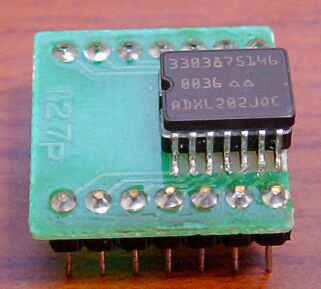
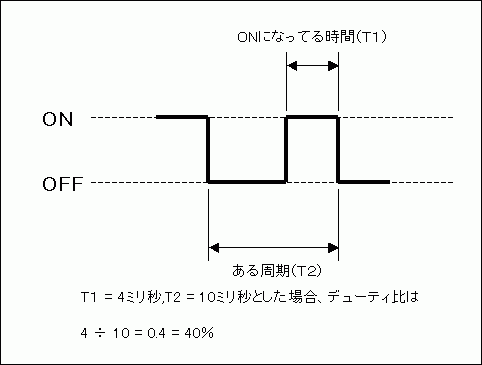
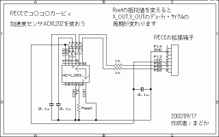
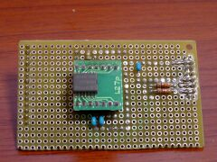
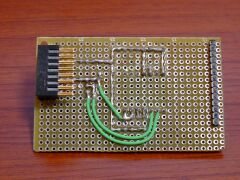
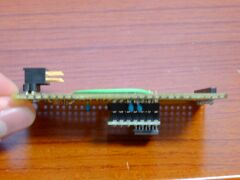
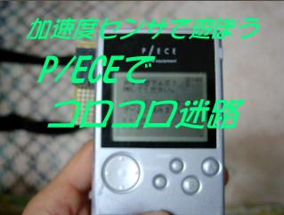

| はじめに |
| どうも、P/ECEで電子工作勉強中のまどかです。 このコーナーでは、P/ECEに隠された「拡張端子」を利用して、電子工作の勉強をしながら自作のハードでいろいろおもしろいことをやっちゃお～というコーナーです（＾＾； さて、今回は最近任天堂の人気キャラクタである「カービィ」シリーズのＧＢＣ専用ソフト「コロコロカービィ」で注目を浴びた、「加速度センサ」なる部品を使って、自分で「コロコロカービィ」みたいなゲームを作ってしまおうということで、「コロコロ迷路」の製作です。 なお、このページを参考にしての作業はすべて自己責任で行ってください。 |
| 作ろうと思ったきっかけ |
| 「コロコロ迷路」を作ろうと思ったきっかけっていうより、「加速度センサ」を使ってみようと思ったきっかけは、えとさんのP/ECEのハード関連の製作記事で、詳しくは書かれていませんでしたが、この「加速度センサ」がP/ECEでも扱えて、これを使えばコロコロカービィみたいなのが作れると紹介してあったのを見て、おもしろそうだなと思ったのがきっかけでした。 ですが、最初えとさんの記事を見たときは、加速度センサの使い方が全然想像できなくて、そもそも加速度センサって何？ という疑問から、いろいろなサイトを回ってみると、この加速度センサを使っていろいろ遊んでいる人がいて、そこで初めて加速度センサのおもしろさを知ったのでした（＾＾； 今回は、他の人が発表している製作記事を、自分なりに工夫して作ってみるという、基本的な勉強法の参考になれば嬉しいです。 何事も人の真似から始めてみるのが一番と、私は思っています。けど、ほんとに同じことだけをしていては、その人を超えることは絶対できないので､必ず自分なりの工夫をすることを私は心がけています。 ま、そんなことより、「自分もやってみたい」という好奇心と、実際にやってみる行動力が大切ですね（＾＾ |
| 加速度センサって何？ |
| さて、まずは今回の作品のメインの部品である「加速度センサ」の説明から入りましょう。 今回使用した加速度センサはアナログ・デバイセズ社のADXL202という部品で、この部品は比較的低価格ながらも±２Ｇの加速度を測定することができます。 また、Ｘ軸・Ｙ軸の2方向について加速度を測定することができるので、水平方向に部品を設置した場合、前後・左右のどの方向に部品が傾いたかを調べることが可能です。 まぁ、部品の中に小さな球が入っていて、それがセンサの上を転がるので傾いている方向と速度が測定できるというイメージで考えてもらえればいいと思います。（実際は違う構造になってますが（＾＾；） と、なんとなくこの部品の特徴がわかったところで（わかってもらえたでしょうか（＾＾；）実際に写真で見ていただきましょう。  緑の基板の上に乗っかっているこの部品が加速度センサ「ADXL202」です。 この部品は専用基板に実装する表面実装型（足が短く平べったいものね）の部品なので､電子工作で扱いやすいように、ピンの間隔を変換するピッチ変換基板（3枚入りで340円くらい）の上にハンダ付けしてありますが、７×10(mm)くらいの小さな部品です。 最初のこのピッチ変換基板にハンダ付けするのがちょっと難しいですが、この基板に乗っけてしまえは、あとは他の部品と一緒なので､普通に扱えます。 ちなみに、表面実装型の足をハンダ付けする場合は、ハンダごてに少量のハンダを盛って、足をなぞるようにハンダを伸ばしていくとうまくハンダ付けできます（＾＾ ハンダ付けするまえにフラックスという液体を基板にひと塗りしておくとハンダ付けがしやすくなるらしいです。（私は付けずにやっちゃいましたが） で、この部品からは、測定したＸ・Ｙ軸方向への加速度がデジタル信号のデューティ・サイクルで出力されます。 おっと、ここで意味不明な言葉がでてきましたね。 「デューティ・サイクル」 さて、これはなんでしょうか？ 英語で書くと"duty cycle"。オンライン辞書で調べると「負荷サイクル」らしいです。うーん、これじゃ意味がさっぱりわかりませんね（＾＾； というわけで、簡単に説明しますと、実はこれ「信号のある周期に対するＯＮになっている時間の比率」なんです。（デジタル信号はＯＮとＯＦＦの2つの状態の繰り返しですよね） と、言葉で書いてもあんまりピンと来ないと思いますので図解で説明しますと、  ということで、ＯＮの時間とＯＦＦの時間が同じになったときデューティ比は50％になり、ADXL202では軸に対してどちらにも傾いていない状態（0G）を表しています。 また、デューティ・サイクルのある周期（Ｔ２）は、ADXL202の5番ピンに接続する抵抗の値でユーザが設定することができます。 ちなみに、周期（Ｔ２）は以下の式で導くことができ、125KΩの抵抗を接続すると1msとなります。 ・抵抗の値による周期の計算 Ｔ２(秒) = Rset(Ω) / 125M(Ω) ※Rsetは5番ピンに接続する抵抗の値 今回の製作では、1ＭΩの抵抗を接続して、約8msの周期で扱っています。 ちょっと話が難しくなってきましたが、実際にゲームで使用する場合には､デューティ・サイクル出力される加速度信号の状態をずーっと監視して、抵抗で設定した周期と調べたＯＮ状態の時間をもとにＸ軸・Ｙ軸の傾き（加速度）を求めて、ゲームのキャラクタの動きに反映させます。 |
| P/ECEとの接続 |
| はい、加速度センサの使い道がわかったところで、今度は加速度センサをP/ECEの拡張端子に接続してみましょう。 接続する際には、アナログ・デバイセズのサイトからＤＬできるADXL202のデータシートをよく読んで、抵抗の値・コンデンサの容量、部品を配置する位置に注意してくださいね。 ちなみに、ADXL202本体もＸ・Ｙ軸のプラスの方向が決まっているので､自分が使おうと思っている方向を確認して取り付けるようにしてくださいね。 と、そこさえ注意すればあとは普通につなげるだけなので､この回路図を参考につなげてみてください。（私もえとさんのところで公開されている回路図を参考につなげました（＾＾；） クリックすると拡大表示されます。  ちなみに、今回私が製作した基板はこんな感じです（＾＾； （クリックすると拡大表示されます）  真ん中に加速度センサを配置してみました。  P/ECEに取り付けると、ちょうどP/ECEの画面 の裏側に加速度センサがきます。 （コロコロカービィの真似です（＾＾；）  上から見るとこんな感じ。 ほとんどハンダ付けする部品はありませんが、一応部品一覧を紹介しておきます。
こうしてみると、加速度センサが低価格版といってもけっこうするので、ちょっとお金がかかっちゃいますね。 けど、私がやったみたいに、この加速度センサが使われているあるモノを中古で手に入れれば、もうちょっと安く仕上げることができます。 そこあるモノとは、コロコロカー…ごにょごにょ（＾＾； |
||||||||||||||||||||||||||||||||||||||||||||||||
| プログラムの話 |
| さて、これで「コロコロ迷路」に必要なハードは完成したのですが、肝心のハードを制御するソフトの方も作らないと､なんにも遊べませんので、ここでは実際の制御プログラムの話に入りたいと思います。 ですが、今回のこのプログラムでは「割り込み」というP/ECEのCPUの仕組みを利用しているので、ちょっと難しいお話になるかもしれません。 といっても、「割り込み」を理解してしまえば、あとはそんなに難しくないので､頑張ってくださいね。 というわけで、まずは「割り込み」という仕組みについて説明します。 「割り込み」というのは、拡張端子のI/Oに何かの信号が入力されたとか､タイマーで指定の時間カウントしたとかいう､何らかの要因によってメインで走っているプログラム中に割り込んで、割り込み処理用のプログラムが実行されるという仕組みのことです。 よーするになんか作業している時に電話がかかってきて、「もしもーし。はいはい、うんわかった。じゃねー」とちょっと電話をしてまた元の作業を再開する。この電話がいわゆる割り込み処理です（＾＾； そして、P/ECEで割り込み処理を実現するには、P/ECEの謎のＡＰＩ（笑）「pceVectorSetTrap」を使います。 実はこれ、232個もある割り込み要因に対して、どの関数を実行するかを設定するＡＰＩで、今回の「コロコロ迷路」で使用したような、拡張端子のI/Oを監視する割り込みという、普段使われていない割り込みに対して、自分で用意した関数を登録することができます。 ちなみに、今回使用した割り込みは、ベクタ番号69と70の「ポート入力割り込み」というのを使いました。このポート入力割り込みというのは､ポートの値が変わったときに割り込み要求が発生する割り込みで、今回は加速度センサの出力がＯＦＦ(Low)からＯＮ(High)に変わる瞬間を監視させています。 割り込みを使うと、自分でいちいち値を調べて判定しなくて良いので､効率的なプログラムを書くことができます。 ちなみに、割り込みの種類はP/ECE付属のドキュメントの中にある「ハードウェア割り込み表」を見るといろいろわかります。「ハードウェア割り込み表」はスタートメニューからたどって「P/ECEの世界へようこそ」というページを開くと、左のメニューに「HARDSPEC」というボタンがあるので、それを展開させると行けます。 で、この中の割り込みで「未使用」と書かれたものはユーザで使うことができる割り込みなのですが､EXT端子用と書いてあるものと、空いてるタイマー、そして今回使用したポート入力割り込みくらいしか使えません（＾＾； 各割り込みの使用方法は、ハードウェア資料の"...\PIECE\docs\datasheet\EPSON\s1c33209_221_222j.pdf"の各項目を参照してくださいね。 ちなみに、今回使ったポート入力割り込みの使い方は、P.365からをよーく読んで理解してください。 お約束ですが、「コロコロ迷路」のソース一式を用意しましたので、割り込み処理の参考にしてくださいね。（ただし、このソースコードを利用してのいかなる損害にも、まどかは責任を負いませんので、あらかじめ御了承ください。m(-_-)m） それでは、ソースコードです。 korokoro_meiro_2002_1025.zip(22.6kB) 実はまだこれ調整中のソースなので､ちょっと水平位置のキャリブレーションがなかなか上手くできてません（＾＾； ゲーム中にＡボタンを押すと、その状態を水平位置としてキャリブレーションするのですが､Ａボタンを押した瞬間のP/ECEの傾きを見ているので､ボタンを押してちょっと傾いた状態が水平位置として認識されてしまいます。 なので、Ａボタンを押す時は、そぉーっと押してくださいね（＾＾； |
| 動いているのも見てね（＾＾ |
| はい、「コロコロ迷路」に必要なハードウェア・ソフトウェアの製作を順に見てもらいましたが、やっぱり実際に動いているところを見てもらわないことには､おもしろさは伝わらないと思います。 というわけで、ちょっと見にくいですが、私が撮影した動画を見て、楽しさを想像してください（＾＾  高解像度版（19.9ＭＢ 約2分間） 低解像度版（2.8MB） |
| 最後に |
| さて、今回の「加速度センサで遊ぼう！ P/ECEでコロコロ迷路」の製作、いかがだったでしょうか。 今回のネタは、私のオリジナルというわけではありませんが、自分で工夫して「コロコロ迷路」というゲームに発展させた点では、オリジナルといえるのではないかと思っています。 このように、他の人が発表したネタを実際に自分でやってみるということは､先の発表者の偉大さを直に感じるばかりでなく、自分の中にも貴重な経験として必ず活きてくるので、おもしろそうなネタを見つけたら、どんどん作っちゃいましょう。そして、どんどん発表してしまいましょう。 というわけで、今回はここまで。 それでは、P/ECEを通じて未来のエンジニアが育つことを願いつつ､お別れです。 でわでわ～ |